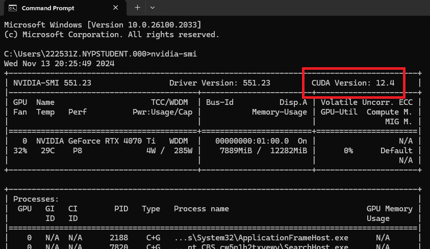
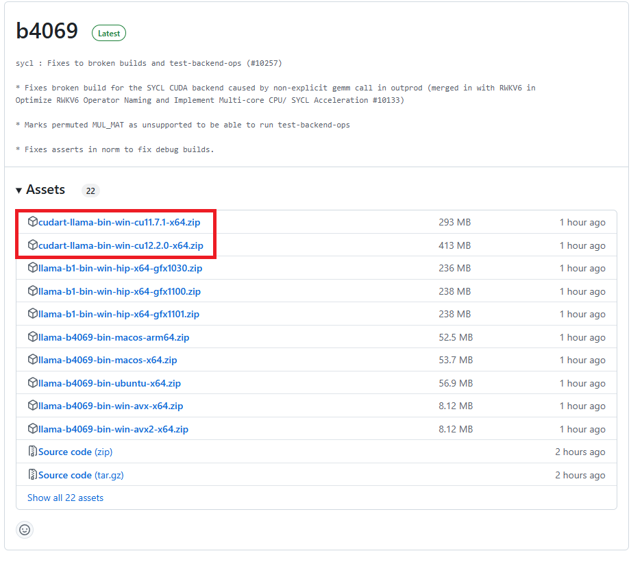
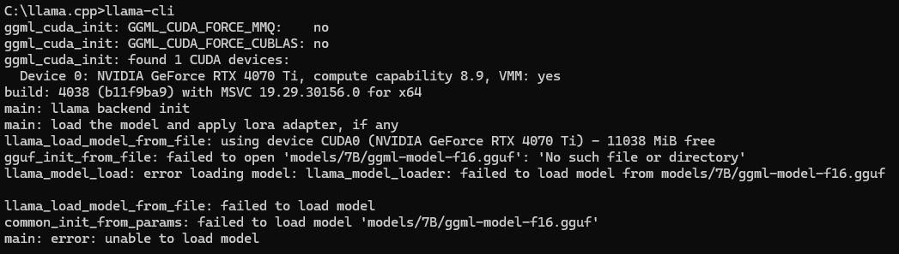
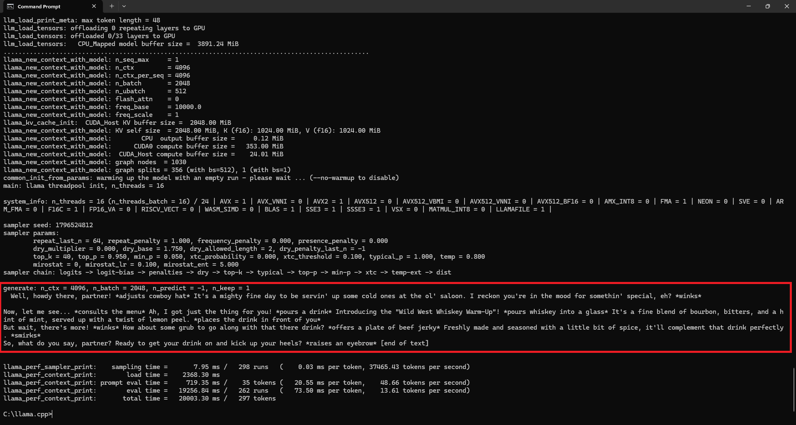

Getting Started
-
Setting up
llama.cppon your device is alot more straightforward. Do note that this is a continuation from ComfyUI, so some files (python, cuda) downloaded while setting up ComfyUI may be required in this section. -
To get started on using a LLM locally, we used these two components:
llama.cpp: The interface we use to access the LLM and feed the AI model our prompts.LLM: The AI model we are using for this project.
-
Download
llama.cpphere. At the time of writing this, the latest version isb4069. Please find the versionbin-winrepresenting windows build.-
To check your device's Cuda version, open up
command promptand typenvidia-smi. It should be displayed. If you're getting an error, please make sure you have Cuda installed on your device. -
After getting your Cuda version, choose the closest Cuda version download: either
cu11.7/cu12.2in the image shown below (this might differ based on the time of reading)

-
-
After downloading
llama.cpp, unzip it into yourC:/drive. Please get rid of the inner file (if there is one). Make sure your file path is something like this:C:\llama.cpp, and notC:\llama.cpp\llama.cpp. -
To check if everything is working, open up a
command promptand change the directory to where thellama.cppis at usingcd. If you placed the file in the directory stated above, you can just docd C:\llama.cpp.- Once you're in the right directory, input
llama-clito run the llama client. - You should see an error
main: error: unable to load model. 
- Once you're in the right directory, input
-
The
main: error: unable to load modelerror is caused by the absence of aLLMto run. Think of this as Queueing a prompt without acheckpoint modelin ComfyUI. -
You can go to Hugging Face to pick a suitable
LLMfor your project. Or you can just download this model for now if you can't decide. -
Please place the
LLMin the root directory of yourllama.cppfolder. The file path to the LLM should beC:\llama.cpp\modelName.gguf. -
Every AI model has a specific prompt template. You can find the prompt template in the Hugging Face page where you downloaded your model from. If you're using the
LLMprovided above, the template is like so:[INST]<<SYS>>Tell the AI model its purpose, how it should behave etc.<</SYS>>{User Prompt}[/INST] -
The format of requesting a prompt in
llama.cppis like so:llama-cli -m
LLM_Path--no-display-prompt -p "PromptTemplate" -
Now back in the
command prompt, replace the highlighted parts in the format appropriately like so. Please be careful! One mistype and it won't work!:llama-cli -m C:\llama.cpp\llama-2-7b-chat.Q4_K_M.gguf --no-display-prompt -p "[INST] <<SYS>> You are a wild west bartender <</SYS>> {Give me a drink, Bartender!} [/INST]" -
If everything is done correctly,
llama.cppshould immediately start generating the result. After a while, the result will be outputted at the bottom.
-
You can also use this command to enter interactive mode where you can send and recieve texts like a chatbot. This allows you to feed the AI model consecutive prompts. This is good for testing the AI model’s ability to generate responses that match your requirements as well as fine-tune the prompts you are giving it:
llama-cli -m
LLM_Path-ifExample: llama-cli -m C:\llama.cpp\llama-2-7b-chat.Q4_K_M.gguf -if